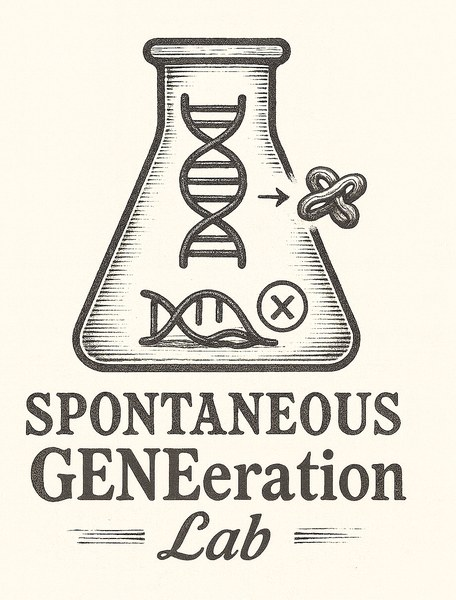
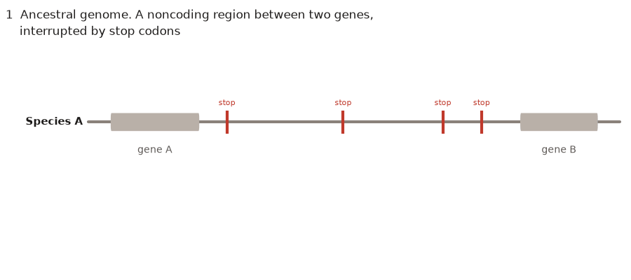

De novo gene birth
How often protein-coding genes emerge from noncoding DNA, and which genomic features favor their birth, with a focus on the Brassicaceae.
More →Ecology and Conservation Biology · Texas A&M University
New genes evolve frequently and play a major role in phenotypic variation, speciation and the emergence of novel traits. In the Casola lab, we study how new genes originate, evolve and gain their specific functions. Our work focuses on de novo genes, which evolve from ancestrally noncoding DNA regions, and genes derived from transposable elements. We combine comparative genomics, machine learning and collaborative experimental work to determine how de novo genes, noncanonical open reading frames and transposable elements contribute to evolutionary novelty in plants and animals.


How often protein-coding genes emerge from noncoding DNA, and which genomic features favor their birth, with a focus on the Brassicaceae.
More →The origin and fate of translated sequences outside annotated genes, from reference catalogs to protein degradation signals.
More →Domestication of transposase genes into host functions and horizontal transfer of transposable elements across kingdoms.
More →Gene turnover in conifers, drought tolerance genomics and convergent molecular evolution.
More →We welcome inquiries from prospective graduate students, postdocs and undergraduates interested in evolutionary genomics and bioinformatics.
Opportunities →